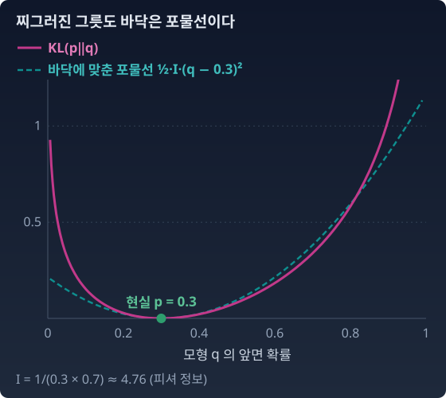

피셔 정보: KL의 발밑에 숨은 대칭
KL은 비대칭이라 '진짜 거리’가 아니라고 했다. 그런데 아주 가까운 두 분포 사이에서는 대칭이 된다면? 그 '찰나의 대칭’은 도대체 무엇일까?
다시 한국 남성의 키 분포로 돌아가자. (174, 5.8)과 (174.01, 5.801). 거의 같은 분포다. 이 두 점 사이에서 KL(p‖q)를 재면 1.5155 × 10⁻⁶, KL(q‖p)를 재면 1.5161 × 10⁻⁶이다. 두 값은 0.03%밖에 다르지 않다. 넓은 현실과 좁은 모형처럼 멀리 떨어진 두 분포에서는 두 방향이 2.5배나 달랐는데, 가까워지니 비대칭이 거의 사라졌다.
찌그러진 그릇 — 바닥은 언제나 포물선
한쪽 벽은 가파르고 다른 쪽 벽은 완만한 그릇이 있다. 그릇 전체는 비대칭이다. 그러나 바닥에 구슬을 놓고 아주 조금만 흔들면, 구슬이 느끼는 바닥은 좌우가 똑같은 포물선이다. 매끄러운 함수는 최솟값 근처에서 언제나 이차식처럼 보이기 때문이다.
q를 움직이며 KL(p‖q)를 재면, q = p에서 0이 되는 그릇이 생긴다. 멀리서 보면 찌그러져 있지만, 바닥 근처는 대칭인 포물면이다. 그 포물면이 얼마나 가파르게 오므라드는지, 곧 KL을 두 번 미분한 값이 피셔 정보다.

동전 하나로 먼저: 베르누이 분포의 피셔 정보
가장 간단한 경우부터 보자. 앞면이 나올 확률이 θ인 동전을 한 번 던지는 분포를 베르누이 분포라고 한다. 모수(분포를 정하는 숫자)가 θ 하나뿐이다. 앞면 확률을 흔히 쓰는 p 대신 θ 로 적는 것은, 이 책에서 p 는 분포 전체(현실)를 가리키고 분포를 정하는 숫자는 θ 로 적기 때문이다. 글자만 다를 뿐 앞면 확률 그대로다. 현실을 θ, 모형을 θ + dθ로 두면
KL(θ‖θ+dθ) = θ log(θ/(θ+dθ)) + (1−θ) log((1−θ)/(1−θ−dθ))
이다. dθ로 한 번 미분하면 −θ/(θ+dθ) + (1−θ)/(1−θ−dθ)라서 dθ = 0에서 0이 된다. 그릇의 바닥이라 기울기가 없다. 한 번 더 미분하면 θ/(θ+dθ)² + (1−θ)/(1−θ−dθ)²라서 dθ = 0에서 1/θ + 1/(1−θ)이다. 테일러 전개로 쓰면 KL ≈ ½ × (이 값) × dθ²이고, 이 값이 베르누이 분포의 피셔 정보다.
θ가 0이나 1에 가까우면 분모가 작아져 I가 커진다. 거의 확신에 찬 분포 근처에서는 θ를 조금만 움직여도 KL이 크게 변한다는 뜻이다. 지금은 피셔 정보를 "KL의 발밑에 숨은 값"이라는 얼굴로 기억해 두자. 아래 파이썬은 θ = 0.3에서 움직이는 크기 ε를 줄여 가며, 두 방향의 KL과 ½Iε²을 견준다.
파이썬
import numpy as np
def kl_bern(a, b):
return a * np.log(a / b) + (1 - a) * np.log((1 - a) / (1 - b))
theta = 0.3
I = 1 / (theta * (1 - theta)) # 베르누이의 피셔 정보
for eps in [1e-1, 1e-2, 1e-3, 1e-4]:
fwd = kl_bern(theta, theta + eps)
bwd = kl_bern(theta + eps, theta)
quad = 0.5 * I * eps**2
print(f"ε={eps:.0e} KL→ {fwd:.3e} KL← {bwd:.3e} ½Iε² {quad:.3e} "
f"비율 KL→/½Iε² {fwd / quad:.4f} KL→/KL← {fwd / bwd:.4f}")
# ε=1e-01 KL→ 2.160e-02 KL← 2.258e-02 ½Iε² 2.381e-02 비율 KL→/½Iε² 0.9072 KL→/KL← 0.9565
# ε=1e-02 KL→ 2.352e-04 KL← 2.366e-04 ½Iε² 2.381e-04 비율 KL→/½Iε² 0.9877 KL→/KL← 0.9939
# ε=1e-03 KL→ 2.378e-06 KL← 2.379e-06 ½Iε² 2.381e-06 비율 KL→/½Iε² 0.9987 KL→/KL← 0.9994
# ε=1e-04 KL→ 2.381e-08 KL← 2.381e-08 ½Iε² 2.381e-08 비율 KL→/½Iε² 0.9999 KL→/KL← 0.9999
ε을 열 배 줄일 때마다 두 비율이 1에 열 배씩 가까워진다.
모수가 여럿이면 — 제곱으로 사라지는 KL
정규분포의 (μ, σ)처럼 모수가 여럿이면, 여러 모수를 함께 조금씩 움직일 수 있다. 그러면 I는 숫자 하나가 아니라 모수 두 개마다 칸이 하나씩 있는 표, 곧 행렬이 된다. 모수 θ로 정해지는 분포 pθ에서 θ를 dθ만큼 움직이면,
가운데 식의 dθᵀ에서 ᵀ(전치)는 세로로 세운 dθ를 가로로 눕힌다는 표시다. 풀어 쓰면 오른쪽의 합이고, 모수가 하나뿐이면 ½Idθ²으로, 곧 앞의 동전 식으로 돌아온다. 여기서 pθ가 현실 자리, pθ+dθ가 모형 자리다.
KL은 dθ의 제곱에 비례해서 0으로 간다. 1차 항이 없는 이유는 모형이 현실과 같을 때(dθ = 0) KL이 가장 작은 값 0을 갖기 때문이다. 바닥에서는 기울기가 0이다. 그리고 두 자리를 바꿔서 잰 KL도 같은 이차식으로 간다. 두 방향의 차이는 KL 자체보다 빨리 사라진다.
불러오는 중…
ML에서: 같은 걸음, 다른 변화
스팸인지 아닌지를 가리는 모델의 출력은 결국 동전 하나, 곧 「스팸일 확률 θ」다. 학습의 한 걸음이 θ를 dθ만큼 옮기면, 분포는 ½I(θ)dθ²만큼 바뀐다. 같은 dθ라도 I가 곳마다 다르니 분포가 움직이는 크기도 곳마다 다르다. 그런데 모델이 실제로 옮기는 것은 θ가 아니라 그 앞의 로짓(시그모이드에 넣기 전의 점수)이다. 로짓으로 걸으면 어떻게 되는지는 아래 문제 9에서 따져 본다.
수확
“KL 발산의 발밑에는 대칭적인 거리가 숨어 있다. 그 거리를 만드는 행렬이 피셔 정보 행렬이다.”
그런데 잠깐 — 우리는 아직 두 점 사이를 "걸어가는 방법"을 모른다. 거리를 재는 건 지도 위에 자를 대는 것이고, 걷는 건 실제로 발을 떼는 것이다. 같은 두 점을 잇는 길이 하나가 아니라면?
문제 8. KL은 삼각부등식을 깨는가 (킬러)
베르누이 분포 세 개 a = 0.1, b = 0.5, c = 0.9를 생각한다. (가) KL(a‖c)와 KL(a‖b) + KL(b‖c)를 비교해 KL이 삼각부등식을 깨는지 확인하라. (나) 그렇다면 KL은 거리로서 쓸모없는가? 유클리드 거리의 제곱과 비교해서 답하라. (다) θ = 0.5에서 KL(θ‖θ+ε) − KL(θ+ε‖θ)가 ε의 몇 제곱으로 줄어드는지 보이고, 위 파이썬의 θ = 0.3일 때와 견주어라. (위 위젯의 θ 슬라이더를 0.5에 두고 아래 그래프로 확인할 수도 있다.)
함께 풀기

(가)는 쉬워요. KL(a‖c)가 1.758이고, KL(a‖b) + KL(b‖c)가 0.368 + 0.511 = 0.879예요. 돌아가는 게 두 배나 짧아요. 삼각부등식 깨졌고요, 그러니까 (나)의 답은 "KL은 거리로는 못 쓴다"예요.

서연 학생도 같은 생각이에요?

잠깐만요. 깨지는 건 맞는데… 그러면 이 장 절반이 쓸모없는 자를 쓴 거잖아요. 뭔가 이상해요. 저는 처음에 로그의 볼록성으로 삼각부등식을 증명하려고 했는데 안 되더라고요. 안 되는 게 당연했던 거죠.

아니면 방향이 문제일지도 몰라요. 두 방향을 더해서 대칭으로 만들면 삼각부등식이 살아나지 않을까요?
해 봐요. a와 c는 0.5를 사이에 둔 거울상이라 계산이 쉬울 거예요.
대칭으로 만들면 a–c가 1.758 × 2 = 3.516이고, a–b랑 b–c가 둘 다 0.368 + 0.511 = 0.879예요. 돌아가도 1.758이라 여전히 절반이에요.

대칭으로 만들어도 안 되네요. 그럼 원인은 방향이 아니라 다른 데 있어요.
좋은 의심이에요. 수직선 위의 점 1, 2, 3을 생각해 봐요. 유클리드 거리의 제곱으로 재면 1에서 3까지가 얼마예요?
4요. 1에서 2가 1, 2에서 3이 1이니까 돌아가면 2고요.

…제곱 거리도 삼각부등식을 깨요. KL은 발밑에서 ½ dθᵀ I dθ, 그러니까 제곱 거리처럼 생겼잖아요. 제곱 거리가 삼각부등식을 깨는 건 결함이 아니라 제곱이라서 그런 거예요.
그래요. KL은 "거리"보다 "거리의 제곱의 절반"에 가까운 물건이에요. 제곱 거리가 쓸모없지 않듯 KL도 쓸모없지 않아요. 최소제곱법이 제곱 거리로 세상을 다 굴리잖아요.

그럼 (다)는요? 저 ε을 1e-9까지 줄여서 찍어 봤는데, KL(θ‖θ+ε)가 −2.0e-18이 나왔어요. KL은 음수가 될 수 없잖아요? 차이도 −4.0e-18이고요. 줄어드는 차수를 모르겠어요.
KL(θ‖θ+ε)의 진짜 값은 ε = 1e-9에서 얼마쯤이어야 해요?
½ I ε²이니까 θ = 0.5면 I가 4라서… 2e-18이요.
그런데 제 코드는 음수가 나왔으니까… 값 자체가 틀렸네요. 로그 두 개를 빼는 과정에서 부동소수점 오차가 1e-16 근처에 깔려 있는데 진짜 값이 그 아래에 있어요.
그래서 ε은 1e-1, 1e-2, 1e-3 정도로 봐야 해요. 그 범위에서 다시 찍어 봐요.
차이가 2.8e-4, 2.7e-8, 2.7e-12예요. ε을 열 배 줄이면 만 배 줄어요.
네제곱이다! 어, 그런데 위 파이썬의 θ = 0.3에서는 두 KL의 비가 1에 열 배씩 다가갔잖아요. KL 자체가 제곱으로 주니까 차이는 세제곱으로 준 거고요. 왜 0.5에서만 한 차수가 더 빨라요?
θ = 0.5는 앞면과 뒷면을 바꿔도 같은 동전이에요. 그래서 ε만큼 올린 쪽과 ε만큼 내린 쪽의 KL이 같고, 두 방향의 차이는 ε의 짝수 함수가 돼요. 짝수 함수에는 세제곱 항이 있을 수 없어요. 테일러 전개로 보면 차이의 세제곱 항 계수가 (2θ − 1)에 비례해서, θ = 0.3에서는 살아 있고 0.5에서는 딱 0이에요.

둘 다 같은 결론에 다른 길로 왔네요. 민준 학생은 숫자가 거짓말하는 구간을 피해서, 서연 학생은 대칭을 따라서. 이 장에서 가져갈 건 세 가지예요. KL은 방향이 있다. KL은 거리보다 제곱 거리를 닮았다. 그리고 아주 가까이에서는 그 제곱 거리가 피셔 정보라는 행렬로 쓰인다.
수학 수업에서 "노름에서 나온 거리"와 "내적에서 나온 제곱 노름"을 구분하라고 그렇게 강조했던 이유를 이제 알겠어요. 둘은 쓰임새가 다르고, 둘 다 필요해요.
문제 9. 로짓으로 걸으면
스팸 분류기는 로짓 z를 내고, 스팸일 확률은 θ = 1/(1 + e−z)다. 학습의 한 걸음이 z를 0.1 옮긴다. (가) z = 0(θ = 0.5)에서 z = 0.1로 갈 때와 z = 4(θ ≈ 0.982)에서 z = 4.1로 갈 때, 각각 θ는 얼마나 움직이고 걸음 전후 두 베르누이 분포의 KL은 얼마인가? (나) 본문은 "θ가 0이나 1에 가까우면 θ를 조금만 움직여도 KL이 크게 변한다"고 했다. (가)의 결과와 맞는가? (다) 같은 학습률로 걸어도 분포가 움직이는 크기가 곳마다 다르다면, 걸음의 크기는 무엇으로 재야 하는가?
함께 풀기
본문대로면 θ가 1에 가까운 z = 4 쪽이 KL이 크겠죠. 돌려 봤는데… z = 0에서는 θ가 0.5에서 0.525로 가고 KL이 1.25 × 10⁻³, z = 4에서는 0.982에서 0.984로 가고 KL이 8.6 × 10⁻⁵예요. 오히려 z = 4 쪽이 열네 배쯤 작아요.
두 곳에서 θ는 얼마나 움직였어요?
z = 0에서는 0.025, z = 4에서는 0.0017이요. 같은 0.1을 걸었는데 θ가 움직인 양이 열다섯 배 가까이 달라요.
시그모이드가 z = 4에서는 거의 평평하니까요. dθ/dz = θ(1 − θ)라서 z = 4에서는 0.018밖에 안 돼요. 그러면 KL ≈ ½ I dθ² = ½ × 1/(θ(1 − θ)) × (θ(1 − θ) dz)² = ½ θ(1 − θ) dz²예요. 로짓으로 재면 피셔 정보가 θ(1 − θ)로 뒤집혀요.
그러면 본문의 말이 틀린 거예요?

아니요. 본문은 θ를 dθ만큼 움직일 때의 이야기예요. 확신에 찬 곳에서는 θ를 조금 움직이는 일 자체가 큰 변화라서, 로짓을 한참 밀어야 겨우 그만큼 움직여요. 무엇을 좌표로 쓰느냐에 따라 "같은 걸음"의 뜻이 달라지는 거예요.
(다)는요?

같은 한 걸음 0.1이 z = 0에서는 KL 1.25 × 10⁻³만큼이고 z = 4에서는 그 열네 분의 일이에요. 로짓으로 재면 곳마다 걸음 크기가 제각각이니까, 걸음은 분포가 실제로 얼마나 바뀌었는지, 곧 KL로 재야겠네요.
그래요. KL로 잰 걸음을 곳마다 고르게 맞추려면 피셔 정보로 걸음을 보정하면 돼요. 그 생각에는 자연 기울기라는 이름이 붙어 있어요.
키를 인치로 바꿔도 KL은 그대로였는데, 피셔 정보는 좌표를 θ에서 z로 바꾸니 달라지네요. KL은 두 분포 사이의 값이라 좌표와 상관없고, 피셔 정보는 좌표 한 칸이 KL로 얼마인지를 재는 값이라 좌표를 따라 바뀌는 거예요. 치환적분에서 dx = g′(u) du의 g′(u)가 따라붙던 것과 같아요.
조교님이 "과목마다 한 시간씩 공부해라"고 해도 과목마다 한 시간에 오르는 점수가 다른 거랑 같네요. 시간 말고 오른 점수로 계획을 짜야죠.